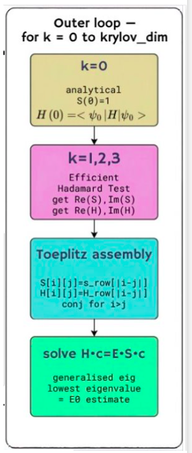
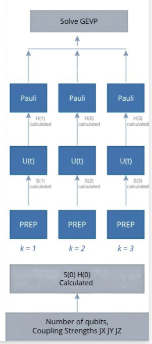

Distributed Krylov Quantum Diagonalization
Parallel Programming Course · IISc CDS, 2026 · GitHub Repository →
A fully distributed, GPU-accelerated implementation of the Krylov Quantum Diagonalization algorithm for solving the time-independent Schrödinger equation on quantum spin systems. Achieves a 6.2× speedup over NVIDIA's CUDA-Q framework at 23 qubits, with near-ideal strong scaling across 3 GPUs via CUDA-aware MPI.
Background & Motivation
One of the central problems in quantum physics and quantum chemistry is the diagonalization of large Hamiltonians — finding the eigenvalues and eigenvectors of matrices that describe the energy landscape of a quantum system. For a system of n qubits, the Hamiltonian lives in a Hilbert space of dimension 2n, making exact diagonalization computationally infeasible beyond roughly 30–40 qubits on classical hardware.
The Heisenberg XXX spin chain is one of the canonical models studied in quantum condensed matter physics. It describes a one-dimensional lattice of spin-½ particles with isotropic nearest-neighbour interactions, governed by the Hamiltonian:
H = J · Σᵢ (Xᵢ Xᵢ₊₁ + Yᵢ Yᵢ₊₁ + Zᵢ Zᵢ₊₁)
where X, Y, Z are Pauli operators and J is the coupling constant. This model is exactly solvable via the Bethe ansatz, making it an excellent benchmark for numerical methods.
Classically, iterative Krylov subspace methods — Lanczos, Arnoldi — are the state of the art for large sparse eigenvalue problems. The Krylov Quantum Diagonalization (KQD) algorithm translates this idea into the quantum computing setting: it builds a Krylov subspace of low-energy states through repeated application of the Hamiltonian, then projects and diagonalizes within this subspace.
NVIDIA's CUDA-Q framework provides high-level Python/C++ abstractions for quantum circuit simulation on GPUs, but this abstraction carries overhead. This project asks: how much faster can we go by dropping down to hand-written CUDA kernels and explicit statevector manipulation?
The KQD Algorithm
The Krylov Quantum Diagonalization algorithm proceeds in three main phases:
1. Krylov Subspace Construction
Starting from an initial reference state |ψ₀⟩, the algorithm iteratively applies the Hamiltonian H to generate a basis for the Krylov subspace:
K_m(H, |ψ₀⟩) = span{ |ψ₀⟩, H|ψ₀⟩, H²|ψ₀⟩, ..., H^(m-1)|ψ₀⟩ }
For k = 0, the overlap S(0) = ⟨ψ₀|ψ₀⟩ = 1 and H(0) = ⟨ψ₀|H|ψ₀⟩ are computed analytically. For k = 1, 2, 3, … we use the Efficient Hadamard Test to extract Re(S), Im(S), Re(H), and Im(H) without full statevector readout.
2. Toeplitz Assembly
Because the Heisenberg Hamiltonian is translation-invariant, the overlap and Hamiltonian matrices are Toeplitz: S[i][j] = s_row[|i−j|] and H[i][j] = H_row[|i−j|]. This means only a single row needs to be computed — the full m×m matrix is assembled by exploiting this structure, with conjugate symmetry for i > j.
3. Generalised Eigenvalue Problem
The small m×m system H·c = E·S·c is solved classically via LAPACK. The lowest eigenvalue gives the ground state energy estimate E₀. Accuracy improves monotonically with the Krylov dimension m.

Single-node KQD algorithm
Implementation
The project provides three complete implementations, each targeting a different hardware model, plus the CUDA-Q baseline for comparison.
CUDA / Hand-Written Kernels (Primary)
The core contribution is a direct statevector simulation engine written in CUDA C++. Rather than going through any quantum circuit abstraction layer, we represent the quantum state as a complex-valued array of length 2ⁿ and apply gates directly as in-place transformations on this array.
Key optimisations
- Fused two-qubit gate application: Each Pauli interaction (XX, YY, ZZ) on adjacent qubits is implemented as a single fused kernel that reads and writes the statevector in one pass, avoiding redundant global memory traffic that would occur if each Pauli term were applied separately.
- Shared-memory tree reductions: Inner products ⟨ψᵢ|ψⱼ⟩ require summing 2ⁿ complex products. We use on-chip shared memory to perform partial reductions within each thread block before writing to global memory, dramatically reducing memory bandwidth pressure.
- Statevector reuse: The Krylov vectors |ψ₀⟩, H|ψ₀⟩, ... are stored in GPU memory and reused across inner product computations without re-copying. Gate applications are done in-place wherever possible.
- Coalesced memory access: Thread indices are mapped to statevector indices such that adjacent threads access adjacent memory locations, maximising cache line utilisation and GPU memory bandwidth.
Distributed Multi-GPU (CUDA-aware MPI)
For qubit counts large enough to exceed a single GPU's memory, the statevector is partitioned across multiple GPUs using MPI. Each Krylov step k spawns three parallel lanes — PREP, U(t), then Pauli measurement — computing S(k) and H(k) simultaneously across GPUs. All results feed upward into a single GEVP solve, as shown in the circuit diagram.
Crucially, we use CUDA-aware MPI, which allows direct GPU-to-GPU transfers over NVLink or InfiniBand without staging data through CPU memory. The partitioning scheme assigns contiguous blocks of statevector amplitudes to each GPU. Two-qubit gate application on qubits that straddle a partition boundary requires a communication phase, while fully local gates run without synchronisation.

Distributed multi-GPU KQD
CPU Reference (OpenMP + MPI)
A CPU port of the same algorithm is provided using OpenMP for shared-memory parallelism within a node and MPI for distributed execution. This serves as both a correctness reference and a performance baseline for estimating the GPU advantage.
CUDA-Q Baseline
NVIDIA's CUDA-Q framework provides a high-level Python API for quantum circuit definition and GPU-accelerated simulation. The same KQD algorithm is implemented at this level to provide a fair comparison against our low-level approach. All implementations produce the same eigenvalue results (verified to numerical precision), with differences only in performance.
Results & Performance
All benchmarks were run on a multi-GPU system with NVIDIA GPUs connected via NVLink, running the Heisenberg XXX spin chain for various qubit counts with a fixed Krylov dimension m = 8.
Single-GPU vs. CUDA-Q
At 23 qubits, our hand-written CUDA implementation runs 6.2× faster than the CUDA-Q baseline. The speedup grows with qubit count, reflecting how the overhead of the circuit abstraction layer (gate scheduling, circuit compilation, intermediate representations) becomes proportionally larger relative to the actual compute work as system size increases.
At smaller qubit counts (below 18), the frameworks are comparable — the circuit sizes are small enough that abstraction overhead is negligible relative to GPU launch and memory allocation costs. The gap opens decisively at 20+ qubits where statevector operations dominate runtime.
Strong Scaling (Multi-GPU)
Strong scaling measures how runtime decreases as we add more GPUs for a fixed problem size. Our distributed implementation achieves near-ideal scaling from 1 to 3 GPUs: doubling the GPU count roughly halves the runtime. This demonstrates that the MPI communication overhead is small relative to the computation — a consequence of CUDA-aware MPI's direct GPU transfers and the communication-overlap scheduling described above.
Key takeaway: The combination of low-level CUDA kernel optimisation and CUDA-aware MPI for distribution produces a quantum simulation engine that significantly outperforms high-level framework alternatives, demonstrating the continued value of systems-level programming for performance-critical scientific computing.
Code & Repository
The full source code — CUDA kernels, MPI harness, CUDA-Q baseline, build scripts, and benchmarking utilities — is available on GitHub.